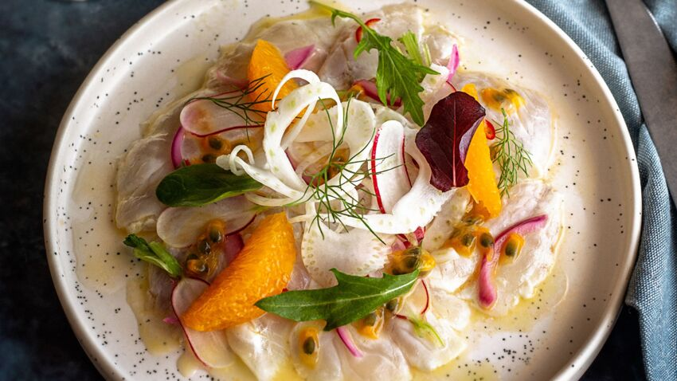
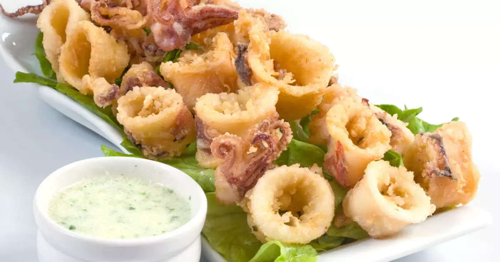

Les Entrées:
|  | Céviche de filets de Daurade aux agrumes: |
Filet de daurade, Orange, Pamplemousse rose, Citron vert, Huile d'olive, Fleur de sel, Moulin à poivre. |
|  | Friture de Calamars à la coriandre: |
calmars ,lait ,semoule de maïs ,farine tout usage ,sel d'ail ,paprika ,citron ,mayonnaise. |
 |
Choux farcis aux crevettes sauce safranée: |
grosses crevettes ,échalote ciselée ,soupe de fromage à tartiner ,soupe de farine de riz ,oeuf ,vin blanc sec |
 |
Tartare de crevettes mangue et avocat: |
crevettes roses ,avocat ,mangue ,huile d’olive ,brins d’aneth ,tabasco ,jus de citron vert ,oignon blanc ,fleur de sel. |
 |
Velouté de Lentilles Corail: |
lentilles corail ,carottes ,lait de coco ,bouillon ,oignon ,curry ,sel ,Huile d olive |